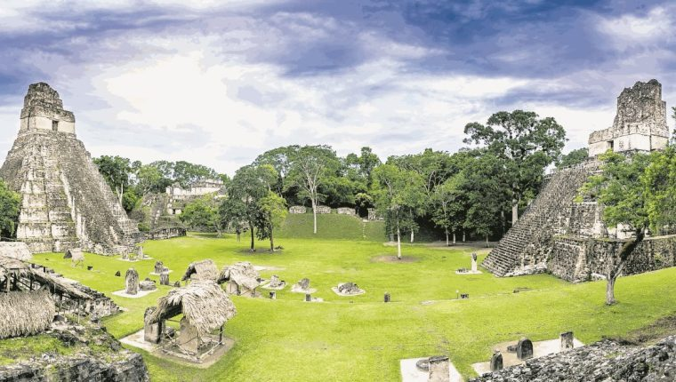
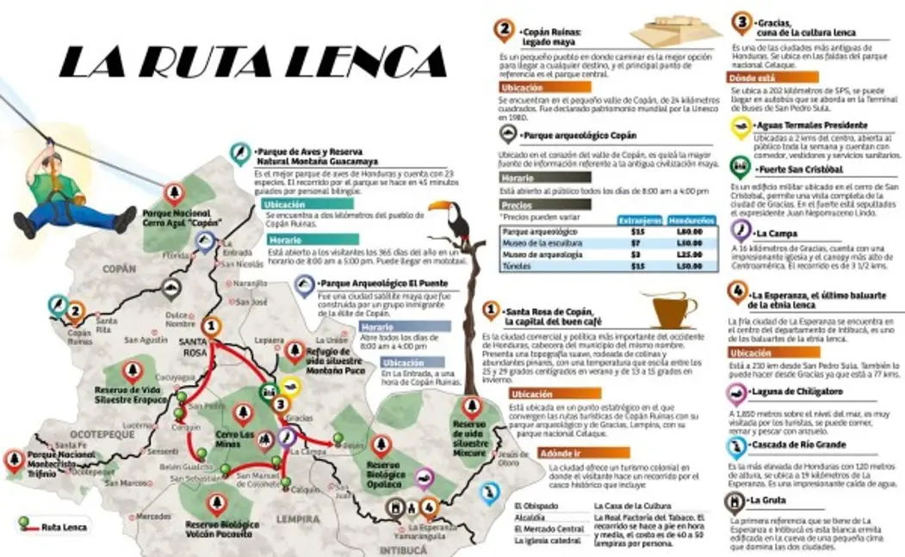
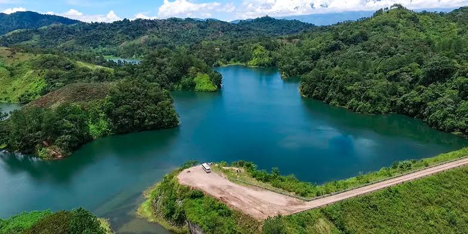

Honduras: Naturalmente Tuya
Más que un país de 5 estrellas.
¡Conoce tu tierra! Viaja a través de una selección de destinos turísticos
que te harán ver Honduras con otros ojos.
Rutas Disponibles
Ruta Maya y Arqueología

Ruta enfocada en el patrimonio cultural precolombino de la cultura maya, caracterizada por relieves arquitectónicos, templos, estelas esculpidas y centros de investigación botánica y natural adyacentes.
Destinos Principales
1. Sitio Arqueológico de Copán Ruinas
Ubicado en el valle del río Copán, a 600 m s. n. m., rodeado de bosque seco subtropical. Comprende la Gran Plaza, la Acrópolis, el Juego de Pelota y la Escalera Jeroglífica, protegidos bajo la categoría de Patrimonio Mundial de la UNESCO.
Atractivos Principales: Escalera Jeroglífica (texto esculpido en piedra más largo de América), Estelas del Rey 18 Conejo, Tunel Rosalila, Museo de Escultura Maya.
Nivel de Dificultad de Acceso: Fácil. Carretera totalmente pavimentada desde San Pedro Sula o la frontera con Guatemala. Recorrido interno por senderos llanos adaptados para todo público.
2. Parque Arqueológico El Puente
Localizado en la cuenca del río Chamelecón, dentro de la comunidad de La Jigua, Copán. Presenta montículos de piedra ceremonial y plazas semiabiertas inmersas en vegetación densa del valle.
Atractivos Principales: Pirámide Principal (Estructura 1), Museo de Arqueología de Sitio, rutas peatonales entre asentamientos secundarios mayas.
Nivel de Dificultad de Acceso: Fácil - Moderado. Acceso en vehículo por desvío pavimentado sobre la carretera CA-11, seguido de un breve tramo secundario.
| Destino |
Ciudad de Origen |
Distancia Estimada (km) |
Altitud (m.s.n.m) |
Tiempo estimado de traslado |
| Sitio Arqueológico Copán Ruinas |
San Pedro Sula |
176 km |
600m |
3hr - 3hr 30m |
| Sitio Arqueológico Copán Ruinas |
Tegucigalpa |
408 km |
600m |
7hr - 8hr |
| Parque Arqueológico El Puente |
San Pedro Sula |
115 km |
420m |
2hr 15m |
| Parque Arqueológico El Puente |
Copán Ruinas |
61km |
420m |
1hr |
Ruta Lenca y Pueblos con Encanto

Ruta que recorre la serranía occidental de Honduras, dominada por la cultura lenca, arquitectura colonial, producción artesanal de alfarería negra y barro, y picos montañosos de gran altitud.
Destinos Principales
1. Gracias, Lempira
Ciudad colonial situada a los pies del Parque Nacional Montaña de Celaque. Presenta un trazado urbano tradicional con calles empedradas, templos barrocos y arquitectura civil de los siglos XVII y XVIII.
Atractivos Principales: Fortaleza de San Cristóbal, Aguas Termales Presidente, Iglesia de La Merced, Iglesia de San Marcos, Centro Histórico colonial.
Nivel de Dificultad de Acceso: Fácil. Conexión por la carretera pavimentada CA-11A desde Santa Rosa de Copán o la carretera del sur vía La Esperanza.
2. La Esperanza e Intibucá
Par de municipios gemelos ubicados en la meseta más alta de Honduras, superando los 1,700 m s. n. m. Poseen un clima templado frío, rodeados de bosques de pino y roble con valles agrícolas.
Atractivos Principales: Laguna de Chiligatoro, La Gruta (ermita tallada en roca volcánica), telares lencas de El Cacao, Mercado Municipal (venta de hongos silvestres y papas).
Nivel de Dificultad de Acceso: Fácil. Red vial totalmente pavimentada desde Siguatepeque por la carretera RN-22.
| Destino |
Ciudad de Origen |
Distancia Estimada (km) |
Altitud (m.s.n.m) |
Tiempo estimado de traslado |
| Gracias, Lempira |
Tegucigalpa |
275 km |
800m |
5hr |
| Gracias, Lempira |
San Pedro Sula |
160 km |
800m |
3hr 15m |
| La Esperanza, Intibucá |
Tegucigalpa |
195 km |
1,700m |
3hr 30m |
| La Esperanza, Intibucá |
San Pedro Sula |
185 km |
1,700m |
3hr 45m |
Ecoturismo y Bosques Nublados

Eje biogeográfico enfocado en la conservación de cuencas hidrográficas, biodiversidad en áreas protegidas, avistamiento de aves continentales y cuerpos de agua dulce de origen tectónico o volcánico.
Destinos Principales
1. Lago de Yojoa y Cataratas de Pulhapanzak
Único lago de origen volcánico/tectónico de Honduras, rodeado por las reservas de PANACAM y Montaña Santa Bárbara. A escasos kilómetros se sitúa el salto de agua de Pulhapanzak con 43 metros de caída libre.
Atractivos Principales: Avistamiento de aves (más de 500 especies registradas), recorridos en kayak, miradores, senderismo en el Parque Nacional Cerro Azul Meámber (PANACAM), Canopy sobre la caída de la catarata.
Nivel de Dificultad de Acceso: Fácil. Accesible directamente a través de la arteria principal CA-5 que une Tegucigalpa con San Pedro Sula.
Parque Nacional Pico Bonito (Cuenca del Río Cangrejal)
Formación montañosa de la Cordillera Nombre de Dios que asciende bruscamente desde el nivel del mar hasta los 2,435 m s. n. m. Presenta bosque húmedo tropical y selva nublada surcada por rápidos de clase II a IV.
Atractivos Principales: Rafting y kayak en el Río Cangrejal, Sendero El Mapache hacia la Cascada El Bejuco, Puentes colgantes y avistamiento de fauna silvestre.
Nivel de Dificultad de Acceso: Moderado - Difícil. Acceso al río desde La Ceiba por vía de terracería compactada (10 km). Los senderos internos a las cumbres requieren alta condición física.
| Destino |
Ciudad de Origen |
Distancia Estimada (km) |
Altitud (m.s.n.m) |
Tiempo estimado de traslado |
| Lago de Yojoa (Peña Blanca) |
San Pedro Sula |
85 km |
630 m |
1hr 30m |
| Lago de Yojoa (Peña Blanca) |
Tegucigalpa |
160 km |
630 m |
2hr 45m |
| Pico Bonito (Río Cangrejal) |
San Pedro Sula |
404 km |
150 m - 2,435 m |
5hr 30m |
| La Esperanza, Intibucá |
San Pedro Sula |
200 km |
150 m - 2,435 m |
3hr 45m |